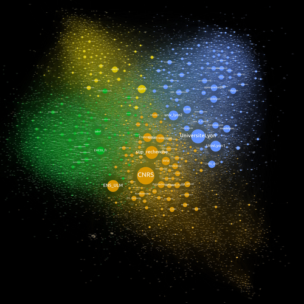

Travaux Pratiques - Graphes
1 Parcours de graphes en
C
1.1 Représentation
On va considérer le type suivant pour les graphes qui suppose qu’on
n’aura jamais plus que MAXV sommets. On utilise ici une
constante avec l’alias #define : partout où on écrit
MAXV, il sera remplacé par la valeur 100.
#define MAXV 100 /* nombre maximum de sommets */
struct edgenode {
int y; // le voisin
struct edgenode *next; // la suite de la liste
};
typedef struct edgenode edgenode;
struct graph {
edgenode *edges[MAXV]; // tableau de listes d'adjacence
int degree[MAXV]; // le degré de chaque sommet
int nvertices;
int nedges;
bool directed; // indique si le graphe est orienté
};
typedef struct graph graph;Pour travailler sur des graphes, on va écrire une fonction permettant de lire un fichier contenant le graphe sous le format suivant :
- première ligne contenant trois entiers, le nombre de sommets n, le nombre d’arêtes p et 0 ou 1 selon que le graphe soit non orienté ou orienté
- ensuite p lignes contenant deux entiers i et j et indiquant qu’il y a une arête de i vers j
Par exemple :
sera représenté par le graphe :1.2 Parcours en profondeur récursif
On va modifier la structure de graphe et rajouter trois nouveaux champs :
On va définir trois fonctions qui seront appelées lors d’un parcours et qu’on pourra redéfinir.
void dfs(graph *g, int x)
{
// important uniquement pour le premier
g->discovered[x] = true;
process_vertex_early(g, x);
edgenode *n = g->edges[x];
while(n != NULL)
{
process_edge(g, x, n->y);
if (!g->discovered[n->y])
{
g->discovered[n->y] = true;
g->parent[n->y] = x;
g->color[n->y] = !g->color[x];
dfs(g, n->y);
}
n = n->next;
}
process_vertex_late(g, x);
g->processed[x] = true;
}On relance ainsi le parcours en repartant d’un sommet non traité.
process_edge dans le parcours de toutes les composantes
pour détecter les arêtes arrières : graph et on commence en donnant la couleur
true au sommet de départ du DFS. Ensuite, il suffit de
colorer avec la couleur différente de \(x\) quand on voit une arête \(x \rightarrow y\) puis de vérifier à chaque
arête qu’elle relie des sommets de couleur différente.
1.3 Temps et classification des arêtes
On rajoute à la structure graph deux tableaux et un
entier :
On définit des constantes :
1.4 Parcours avec une structure
On va réutiliser ici des implémentations de files et de piles dans un tableau de taille fixe.
void init_stack(stack *s)
{
s->back = 0;
}
int pop(stack *s)
{
assert(s->back > 0);
s->back = s->back-1;
return s->elts[s->back];
}
void push(stack *s, int x)
{
assert(s->back < MAXV-1);
s->elts[s->back] = x;
s->back = s->back+1;
}
bool empty_stack(stack *s)
{
return s->back == 0;
}
void init_queue(queue *s)
{
s->front = 0;
s->back = 0;
}
int dequeue(queue *s)
{
int x = s->elts[s->front];
s->front = (s->front + 1) % MAXV;
return x;
}
void enqueue(queue *s, int x)
{
s->elts[s->back] = x;
s->back = (s->back + 1) % MAXV;
}
bool empty_queue(queue *s)
{
return s->front == s->back;
}void dfs(graph *g, int src)
{
stack s;
init_stack(&s);
push(&s, src);
while(!empty_stack(&s))
{
int x = pop(&s);
if (!g->processed[x])
{
g->processed[x] = true;
process_vertex_early(g, x);
edgenode *n = g->edges[x];
while(n != NULL)
{
push(&s, n->y);
n = n->next;
}
}
}
}
void bfs(graph *g, int src)
{
queue s;
init_queue(&s);
enqueue(&s, src);
while(!empty_queue(&s))
{
int x = dequeue(&s);
if (!g->processed[x])
{
g->processed[x] = true;
process_vertex_early(g, x);
edgenode *n = g->edges[x];
while(n != NULL)
{
enqueue(&s, n->y);
n = n->next;
}
}
}
}2 Étude d’un graphe issu d’un réseau social
Dans ce TP on va étudier le graphe orienté des
followers du compte Twitter @ENSdeLyon.
Une représentation graphique de ce graphe est donné dans l’image suivante :

Les sommets sont les comptes donnés par leur identifiant (le
@identifiant de Twitter) et une arête x \(\rightarrow\) y indique que le compte x est
abonné au compte y.
Ce graphe est assez conséquent : il comporte 8418 sommets et 305288 arêtes. Il nous permettra ainsi d’étudier en pratique la complexité des différents algorithmes étudiés. On va commencer par lire ce graphe depuis un fichier, ensuite, on en déduira différents graphes associés (sous-graphes, symétrisés par excès ou par défaut…) sur lesquels on pourra appliquer les algorithmes demandés. Une table de résultat est fourni en fin de TP pour vérifier vos résultats.
2.1 Définition et lecture du graphe
Le graphe est donné dans le fichier ENSdeLyon.graph. Il s’agit d’un fichier texte ayant la structure suivante :
- un entier
n_sommetssur une ligne - un entiers
n_aretessur une ligne n_sommetslignes contenant une chaîne de caractère représentant l’identifiant d’un sommetn_aretescouple de lignes comportant sur la première un entiersrcet sur la seconde un entiertgtindiquant une arêtesrc -> tgt.
On va utiliser le type suivant permettant de représenter le graphe par listes d’adjacence :
Pour lire le graphe depuis le fichier, le plus simple est de le
rediriger sur l’entrée standard (Rappel
./monprogramme < monfichier) et d’utiliser les deux
fonctions suivantes :
read_int : unit -> intlit une ligne composée d’un entier et renvoie sa valeur.read_line : unit -> stringlit une ligne et la renvoie sans le caractère de saut de ligne, c’est-à-dire, sans le'\n'.
Alternativement, on peut lire le graphe depuis un fichier avec :
open_in : string -> in_channelqui crée un descripteur de fichier en lecture pour le nom de fichier passé en paramètreinput_line : in_channel -> stringqui lit une ligne dans le descripteur et la renvoie sans le saut de ligneint_of_string : string -> intqui convertit une chaîne contenant un entier en entier.
let read_graphe () =
let nb_sommets = read_int () in
let nb_aretes = read_int () in
let sommets = Array.init nb_sommets
(fun _ -> read_line ()) in
let aretes = Array.make nb_sommets [] in
for _ = 0 to nb_aretes - 1 do
let src = read_int () in
let tgt = read_int () in
aretes.(src) <- tgt :: aretes.(src)
done;
{ sommets=sommets; aretes=aretes }Si \(G = (S,A)\) est un graphe dont les sommets sont énumérées \(S = \{ s_0, s_1, \dots, s_{n-1} \}\), on note, pour \(p \le n\), \(G_p\) le sous-graphe induit par \(\{ s_0, \dots, s_{p-1} \}\).
Notons ici qu’on aurait pu avoir une approche plus fonctionnelle pour sélectionner les bonnes arêtes :
Si \(G = (S,A)\) est un graphe orienté, on a vu au paragraphe Graphes non orientés les graphes non orientés par défaut et par excès, \(G^-\) et \(G^+\) qui lui sont associés.
let defaut g =
let n = Array.length g.sommets in
let sommets = Array.copy g.sommets in
let aretes = Array.make n [] in
for i = 0 to n - 1 do
List.iter (fun j ->
if List.mem i g.aretes.(j)
then aretes.(i) <- j :: aretes.(i))
g.aretes.(i)
done;
{ sommets = sommets; aretes = aretes }
let exces g =
let n = Array.length g.sommets in
let sommets = Array.copy g.sommets in
(* on recopie les arêtes existantes *)
let aretes = Array.copy g.aretes in
for i = 0 to n - 1 do
List.iter (fun j ->
(* on rajoute les retours absents *)
if not (List.mem i g.aretes.(j))
then aretes.(j) <- i :: aretes.(j))
g.aretes.(i)
done;
{ sommets = sommets; aretes = aretes }Si \(G = (S,A)\) est un graphe orienté, on note \(rev(G) = (S,A')\) son miroir qui vérifie \((i,j) \in A \iff (j,i) \in A'\), c’est-à-dire qui renverse toutes les arêtes.
Dans la suite du sujet on note \(\mathcal{G}\) le graphe des followers contenu dans le fichier. On va considérer dans la suite les graphes :
\(\mathcal{G}, rev(\mathcal{G}), \mathcal{G}^-, \mathcal{G}^+, \mathcal{G}_{500}, rev(\mathcal{G}_{500}), \mathcal{G}_{500}^-\) et \(\mathcal{G}_{500}^+\).
2.2 Statistiques sur les degrés
Notons qu’on peut, ici aussi, écrire une fonction utilisant la bibliothèque standard efficacement :
2.3 Parcours en largeur
On va réaliser ici un parcours en largeur qui sera amené à être modifié et enrichi dans les questions suivantes. On vous laisse libre d’enrichir ce parcours en utilisant des fonctionnelles pour les traitements ou de modifier le code du parcours directement.
Pour utiliser une file, on va utiliser le module Queue. Dans le parcours
on va calculer la fonction de distance d et pour gérer les
cas où \(d(x) = \infty\), on va la
représenter par un int option array. Si
d.(x) = None c’est que x est inconnu, on peut
donc se servir de ce tableau pour avoir l’état d’un sommet.
let bfs g x =
let n = Array.length g.sommets in
let p = Array.make n None in
let d = Array.make n None in
let a_traiter = Queue.create () in
Queue.add x a_traiter;
d.(x) <- Some 0;
while not (Queue.is_empty a_traiter) do
let x = Queue.take a_traiter in
List.iter (fun y ->
Queue.add y a_traiter;
p.(y) <- Some x;
d.(y) <- Some (Option.get d.(x) + 1))
(List.filter (fun y -> d.(y) = None)
g.aretes.(x))
done;
d, pSi \(x \in S\), on note \(\underline{x} = \enscomp{y \in S}{x \leadsto y}\).
2.4 Plus long chemin et diametre
let plus_loin g x =
let n = Array.length g.sommets in
let d, p = bfs g x in
let i = ref 0 in
while d.(!i) = None do
incr i
done;
let m = ref (!i) in
for j = !i+1 to n - 1 do
match d.(j) with
| Some v -> if v > Option.get d.(!m) then m := j
| None -> ()
done;
let v = Option.get d.(!m) in
!m, v, chemin g p !m2.5 Table de résultats
Attention : s’il faut peu de temps pour obtenir les résultats pour le sous-graphe de 500 sommets, c’est beaucoup plus long sur le graphe en entier.
- \(\mathcal{G}_{500}\) :
degré max 10
degré moyen 0.430000
max_accessibles Mishkalashnikov avec 16 sommets
Diamètre 7 réalisé par :
Isaac__K -> naxonlabs -> faezeh_db -> MooreInst ->
fath_gabrielle -> hypothesesorg -> ScienceFactor -> savantures- \(rev(\mathcal{G}_{500})\) :
degré max 31
degré moyen 0.430000
max_accessibles savantures avec 76 sommets
Diamètre 7 réalisé par :
savantures -> ScienceFactor -> hypothesesorg ->
fath_gabrielle -> MooreInst -> faezeh_db -> naxonlabs -> Isaac__K- \(\mathcal{G}_{500}^-\) :
degré max 4
degré moyen 0.176000
max_accessibles SeverineWozniak avec 8 sommets
Diamètre 4 réalisé par :
QLMB8mars -> giu_sapio -> louise_tbr -> GroupeImpec -> halfbloodqueenx- \(\mathcal{G}_{500}^+\) :
degré max 32
degré moyen 0.684000
max_accessibles helloselyn avec 98 sommets
Diamètre 12 réalisé par :
TsamiyahL -> FES_AFNEUS -> FlorestanAFNEUS -> FedeAddiction ->
LS46151053 -> hypothesesorg -> Osec2022 -> ardakaniz ->
ValRobert974 -> DialloAIbrahim2 -> Defense137 -> KArthemis ->
SGF_GEOSOC- \(\mathcal{G}\) :
degré max 950
degré moyen 36.266096
max_accessibles Boris_Brana avec 6049 sommets
Diamètre 9 réalisé par :
MonaEmara10 -> SambitPhD -> MIT_CSAIL -> MehdiKaytoue -> gromuald ->
ECHARDE_ENSL -> cerseilia_ -> dadoyeldado -> Deccefunjoogu -> stoicsalik- \(rev(\mathcal{G})\) :
degré max 3655
degré moyen 36.266096
max_accessibles JustVonBraun avec 7532 sommets
Diamètre 9 réalisé par :
Bonusbasci -> TCebere -> Miruna_Rosca -> h2020prometheus ->
barENdSonLyon -> INP_CNRS -> ThierryCoulhon -> Phil_Baty ->
HigherEdFutures -> HEMobilities- \(\mathcal{G}^-\) :
degré max 610
degré moyen 12.069850
max_accessibles augabcoh avec 5352 sommets
Diamètre 10 réalisé par :
LeaLescouzeres -> Gauthier_tls -> MorganeBoulch -> CSNB14 ->
leo_chapuis -> CCILYONMETRO -> IsabelleHuault -> Phil_Baty ->
UNIKEhighered -> HigherEdFutures -> HEMobilities- \(\mathcal{G}^+\) :
degré max 3655
degré moyen 60.462343
max_accessibles augabcoh avec 7854 sommets
Diamètre 7 réalisé par :
GabrielMarseres -> caroched -> MarieMoroso -> L3vironaute -> najatvb ->
LeankonCarotte -> JustVonBraun -> Sardine491600632.6 Aller plus loin
On propose ici plusieurs pistes de réflexions pour prolonger le TP :
- On a vu des algorithmes de dessin de graphes adaptés à des petits graphes. La présence de l’interaction sommet-sommet semble leur donner une complexité en \(O(n^2)\) qui est rédhibitoire ici. Cependant, des sommets éloignés ont peu de chance d’interagir, comment pourrait-on modifier l’algorithme pour ignorer les interactions de répulsions entre sommets éloignés ? On remarque que la distance n’est pas un critère valide car les sommets peuvent être tous être superposés. Une manière de traiter cela efficacement est de découper le plan en région par des droites successives. Allez voir la page Binary Space Partionning et en déduire un algorithme effectif de dessin de graphe adapté.
- Pour estimer l’importance d’un compte, on ne peut pas se fier à son degré. En effet, celui-ci peut être augmenté artificiellement. Une manière fiable de mesurer l’importance est d’imaginer quelqu’un naviguant aléatoirement sur des comptes en suivant des liens d’abonnement et de mesurer la probabilité qu’il se retrouve sur un compte donné. C’est le principe qui est à la base de l’algorithme PageRank utilisé par Google. Implémenter cet algorithme et en déduire les comptes les plus importants dans cet exemple.
3 Plus courts chemins en
OCaml
Ce TP vous demande plus d’autonomie que les TP précédents. Il s’agit de mobiliser des connaissances plus anciennes et d’implémenter effectivement des algorithmes que l’on comprend bien en pseudo-code.
L’objectif est de pouvoir résoudre des problèmes comme :
Si vous êtes courageux, foncez sans lire la suite ;-)
3.1 Écriture naïve de Dijkstra
Écrire une implémentation de Dijkstra reposant sur une référence sur une liste de sommets pour effectuer la recherche du sommet de plus petite priorité. On pourra s’inspirer du programme Python ci-dessus.
On considérera, comme pour les autres parcours que le graphe est donné sous la forme de listes d’adjacence mais cette fois, les listes devront comporter les poids. En supposant que \(S = \{ 0, 1, \dots, n-1 \}\) on utilisera directement le type suivant en supposant des poids entiers positifs :
Pour un sommet \(x\) on a donc une liste de couples \((y,w)\) où pour chaque arête \(x \rightarrow y\) avec \(\pi(x \rightarrow y) = w\).
Pour le tableau des distances, on pourra définir un
type poids = I | N of int ou considérer pour l’infini un
entier plus grand que tous les poids de chemins, comme la somme des
poids de toutes les arêtes plus 1.
3.2 Réalisation d’une file de min-priorité
Reprendre l’implémentation des files de priorité donnée dans le corrigé du TP18 (cliquez sur les liens dans les titres de parties) en faisant en sorte de gérer des couples \((sommet, distance)\) et en faisant attention au fait que distance peut être \(\infty\).
Attention il s’agit ici de file de priorité minimale !
3.3 Écriture de Dijkstra efficace
Utiliser la file de priorité pour en déduire une implémentation efficace.
3.4 Floyd-Warshall
Lire et implémenter l’algorithme de Floyd-Warshall au-dessus.
let (+$) a b =
(* une addition pour avoir max_int + * = max_int *)
if a = max_int || b = max_int
then max_int
else a+b
let floyd_warshall poids =
let n = Array.length poids in
let m = Array.make_matrix n n max_int in
for i = 0 to n-1 do
for j = 0 to n-1 do
if i = j
then m.(i).(i) <- 0
else m.(i).(j) <- poids.(i).(j)
done
done;
for k = 0 to n-1 do
for i = 0 to n-1 do
for j = 0 to n-1 do
m.(i).(j) <-
min m.(i).(j) (m.(i).(k) +$ m.(k).(j))
done
done
done;
mlet floyd_warshall poids =
let n = Array.length poids in
let m = Array.make_matrix n n max_int in
let parent = Array.make_matrix n n None in
for i = 0 to n-1 do
for j = 0 to n-1 do
if i = j
then m.(i).(i) <- 0
else begin
m.(i).(j) <- poids.(i).(j);
parent.(i).(j) <- i
end
done
done;
for k = 0 to n-1 do
for i = 0 to n-1 do
for j = 0 to n-1 do
let par_k = m.(i).(k) +$ m.(k).(j) in
if par_k < m.(i).(j)
then begin
m.(i).(j) <- par_k;
parent.(i).(j) <- parent.(k).(j)
end
done
done
done;
m, parent3.5 Problèmes
Résoudre les problèmes donnés au dessus. On pourra utiliser la
fonction suivante en OCaml pour lire des entiers séparés
par des espaces sur une ligne :
 Marc de Falco
Marc de Falco